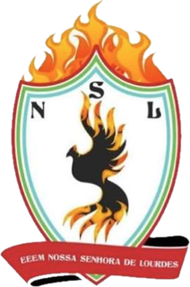

Apenas seu primeiro nome aparece na lista enquanto o pedido está em análise; os demais dados são vistos só pela coordenação.
Descreva o que você perdeu. A coordenação vai procurar e você recebe uma notificação se um item parecido for cadastrado.
Só a coordenação vê o seu nome e a sua turma. O aviso não aparece na lista pública.
Quais dados são guardados. Nome, turma e RA do aluno, quando ele pede a retirada de um item ou avisa um objeto perdido. Também a descrição do item e a foto, que deve mostrar só o objeto, sem pessoas.
Quem vê. A coordenação vê nome, turma e pedidos. O aluno vê somente os próprios pedidos e avisos. Quem visita o site sem entrar vê os itens, sem nomes de alunos.
Por quanto tempo. A foto de um item é apagada quando ele é devolvido. Itens devolvidos são apagados após 180 dias, junto com os pedidos deles. Avisos de objeto perdido encerrados são apagados após 30 dias. Avisos ainda abertos ficam guardados até serem encerrados. Cópias de segurança diárias são mantidas por 14 dias.
Para que servem. Organizar a devolução de achados da escola. Os dados ficam guardados no servidor de hospedagem do site.
Como pedir a remoção. Procure a coordenação da escola.
Texto de orientação. Confirme com a direção da escola antes de divulgar o site.